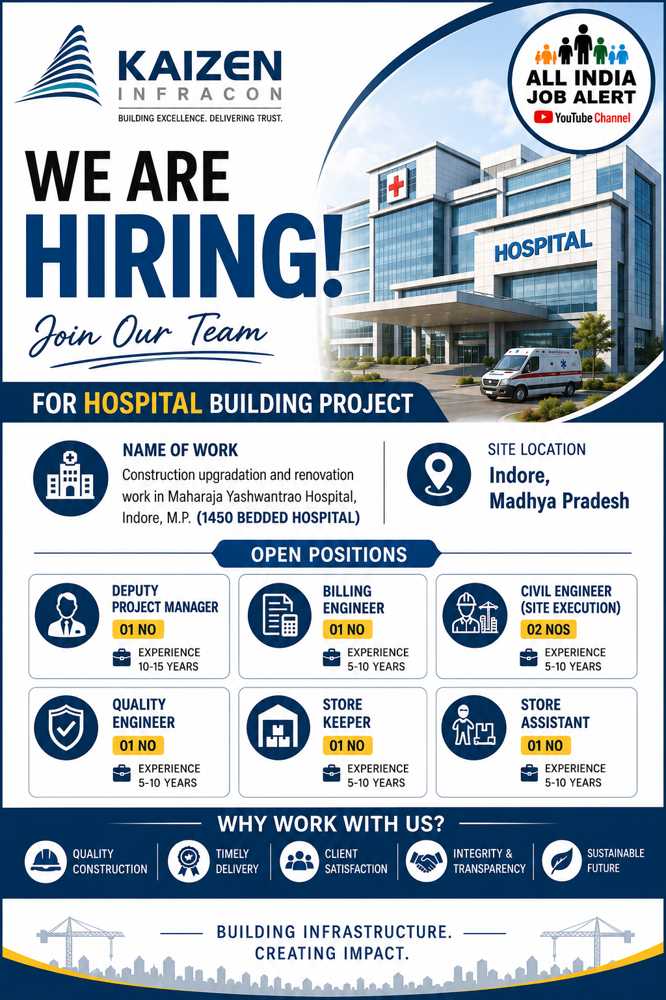

Kaizen Infracon Recruitment 2026 – Overview
Kaizen Infracon has announced recruitment opportunities for experienced construction and infrastructure professionals for a major hospital building project in Indore, Madhya Pradesh. According to the recruitment poster, the project involves construction upgradation and renovation work at Maharaja Yashwantrao Hospital, Indore, Madhya Pradesh. The hospital project is described as a 1450-bedded hospital development, making this an important infrastructure and construction opportunity for experienced professionals.
The recruitment drive is aimed at candidates who have relevant experience in construction, project execution, billing, civil engineering, quality control, store management and site-related activities. Several positions are available for candidates with approximately 5 to 15 years of relevant experience, depending on the position. Candidates who have worked on large building, hospital, infrastructure or construction projects may find these vacancies particularly relevant.
Project: Hospital Building Project
Project Location: Indore, Madhya Pradesh
Work: Construction Upgradation & Renovation
Hospital: Maharaja Yashwantrao Hospital
Hospital Capacity: 1450 Bedded Hospital
Current Job Vacancies
The Deputy Project Manager position is suitable for experienced construction professionals having approximately 10 to 15 years of relevant experience. Candidates should have strong knowledge of project execution, construction coordination, workforce management, site progress and project activities. Experience in large building or infrastructure projects can be beneficial.
Candidates with approximately 5 to 10 years of experience can apply for the Billing Engineer position. The role may involve quantity measurement, preparation and checking of bills, coordination with project teams, documentation and monitoring of construction-related billing activities. Relevant experience in building or infrastructure projects is preferred.
The Civil Engineer position is intended for candidates with around 5 to 10 years of relevant experience in site execution. Candidates should understand civil construction activities, drawings, site coordination, quality requirements, contractor coordination and progress monitoring.
The Quality Engineer vacancy is suitable for candidates having approximately 5 to 10 years of experience. The selected candidate may be responsible for monitoring construction quality, inspections, documentation, quality procedures and coordination with site execution teams.
The Store Keeper position requires approximately 5 to 10 years of relevant experience. Responsibilities may include material receiving, material records, stock monitoring, issue and receipt documentation, inventory coordination and maintaining proper records for construction materials.
Candidates with around 5 to 10 years of experience may apply for the Store Assistant position. The role can involve assisting the store team in material handling, inventory records, documentation, material movement and coordination with construction site personnel.
About the Hospital Building Project
The recruitment advertisement highlights construction upgradation and renovation work associated with Maharaja Yashwantrao Hospital in Indore. Hospital construction projects require proper coordination between civil, MEP, quality, safety, material and project management teams. Professionals working on such projects need to follow project specifications, quality standards, safety requirements and construction schedules.
Because the project involves a large hospital facility, candidates with experience in major construction projects may have an opportunity to work in a professional infrastructure environment. Hospital projects can involve multiple construction activities and require coordination between several teams. Site engineers, quality professionals, billing staff, store personnel and project managers may all work together to maintain project progress.
Eligibility and Experience
The experience requirement varies according to the position. The Deputy Project Manager role requires the highest level of experience among the listed vacancies, with approximately 10 to 15 years of experience. Billing Engineer, Civil Engineer, Quality Engineer, Store Keeper and Store Assistant positions generally mention approximately 5 to 10 years of experience.
Candidates should carefully check their qualifications and relevant work experience before applying. Relevant experience in construction projects, building projects, infrastructure projects, hospital projects or similar large-scale works may be useful depending on the role.
Skills That Can Be Useful
Candidates applying for civil and project positions should have practical knowledge of construction activities, site execution, drawing coordination, quality inspection, project documentation, contractor coordination and progress monitoring. Billing professionals should understand measurements, quantity calculations, bills and project documentation.
Quality professionals should be familiar with inspection procedures, construction quality requirements, documentation and coordination with execution teams. Store professionals should have good knowledge of material management, inventory records, material receipts, material issues and construction-site store operations.
Why Candidates May Consider This Opportunity
This recruitment can be relevant for experienced construction professionals looking for opportunities in Madhya Pradesh. Indore is one of the major cities of the state and has ongoing development across infrastructure, commercial, residential, healthcare and institutional sectors. Working on a large hospital infrastructure project can provide exposure to organized project execution and multidisciplinary construction activities.
Candidates who have previously worked on large construction sites may be able to use their existing experience in project coordination, execution, quality, billing or materials management. However, candidates should always verify the latest recruitment information and employment terms before accepting any position.
How to Apply
Send Your CV
Interested candidates can send their updated CV/resume to:
Email: info@kaizeninfracon.in
Candidates should mention the position they are applying for in the email subject and provide an updated resume containing their latest experience, qualification, current location and relevant project details.
Documents Candidates Should Keep Ready
Candidates should keep an updated resume ready before applying. It is useful to include educational qualifications, technical certifications, total experience, current designation, previous project experience and important skills. Candidates may also keep copies of relevant educational certificates, experience letters, identity documents and other employment-related documents ready if requested during the recruitment process.
For experienced construction professionals, the resume should clearly mention the type of projects handled, project size, designation, responsibilities, duration of employment and major technical activities performed. This helps the recruitment team understand whether the candidate's experience matches the requirement of the vacancy.
Important Information for Job Seekers
Candidates are advised to verify recruitment information before sharing personal documents. Job seekers should be cautious about anyone asking for money in exchange for a job, interview confirmation, registration or offer letter. A candidate should never share sensitive banking information, passwords, OTPs or other confidential details with unknown individuals.
The information published on this page is based on the recruitment advertisement provided for this vacancy. Job availability, requirements, interview schedules and other recruitment conditions can change. Candidates should confirm the latest details with the recruiting organization before travelling to any location or making employment decisions.
Career Opportunity in Indore
Indore is an important commercial and industrial centre in Madhya Pradesh. The city has experienced significant development in infrastructure, healthcare, commercial buildings, residential projects and other construction activities. For construction professionals, opportunities in the city can include civil execution, project management, billing, quality control, planning, procurement, stores and site supervision.
Professionals who already have experience in construction and infrastructure projects can explore this recruitment based on their individual experience and career objectives. Candidates should consider the job role, experience requirement, project location, responsibilities and employment conditions before applying.
Final Summary
Kaizen Infracon Recruitment 2026 provides multiple opportunities for experienced professionals connected with construction and hospital infrastructure projects. The advertised vacancies include Deputy Project Manager, Billing Engineer, Civil Engineer for Site Execution, Quality Engineer, Store Keeper and Store Assistant.
The project location is Indore, Madhya Pradesh, and the work mentioned in the recruitment advertisement relates to construction upgradation and renovation of Maharaja Yashwantrao Hospital. Candidates with approximately 5 to 15 years of relevant experience, depending on the position, can check their eligibility and submit their updated resume.
If you are an experienced civil engineer, billing professional, quality engineer, project management professional or construction store specialist, this recruitment may be worth checking. Always verify the latest vacancy status and recruitment instructions before applying.